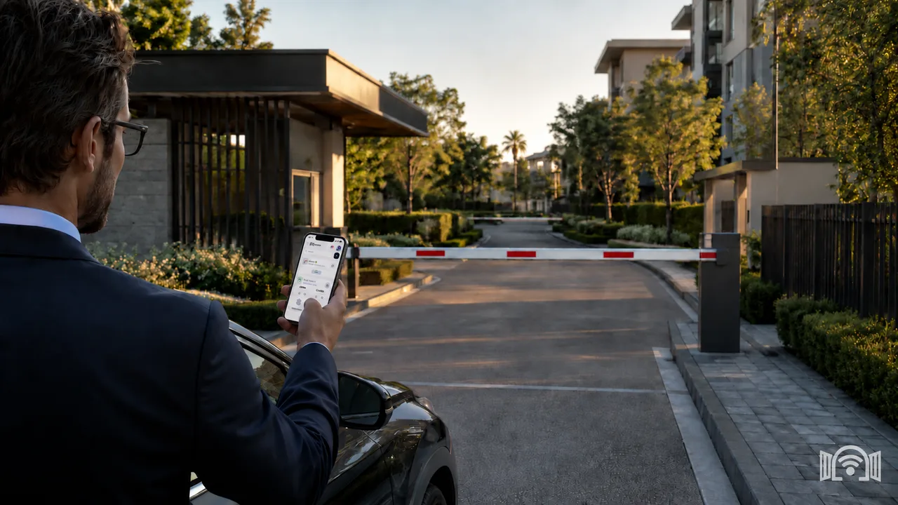

Apertura automatica nell'ingresso di ogni giorno
Auto Open riconosce che sei arrivato e apre il cancello per te. Niente ricerche nel vano portaoggetti e niente finestrino abbassato sotto la pioggia.

Caso d'uso WIFIGATE
Apri il cancello o la sbarra dal telefono, invia un permesso temporaneo a un ospite o a un fornitore e fai passare automaticamente gli utenti abituali. I telecomandi esistenti continuano a funzionare in parallelo.
Auto Open riconosce che sei arrivato e apre il cancello per te. Niente ricerche nel vano portaoggetti e niente finestrino abbassato sotto la pioggia.
Invece di prestare un telecomando e sperare che torni indietro, invia un permesso valido solo nella fascia oraria in cui serve davvero, che poi si chiude da solo.
WIFIGATE si aggiunge a ciò che è già installato sul cancello. Chi preferisce il telecomando continua a usarlo, chi preferisce il telefono apre semplicemente dall'app.
Sì. WIFIGATE si collega al cancello o alla sbarra e gli utenti autorizzati lo aprono dall'app WIFIGATE, con permessi permanenti o temporanei.
No. Il telefono comunica direttamente con il dispositivo WIFIGATE, quindi il cancello non ha bisogno di scheda SIM, piano internet o router Wi‑Fi esterno.
Sì. I telecomandi esistenti continuano a funzionare insieme al controllo dall'app, quindi non bisogna buttare via niente.
No. Paghi una sola volta il dispositivo e l'installazione, senza abbonamento mensile né costi ricorrenti.